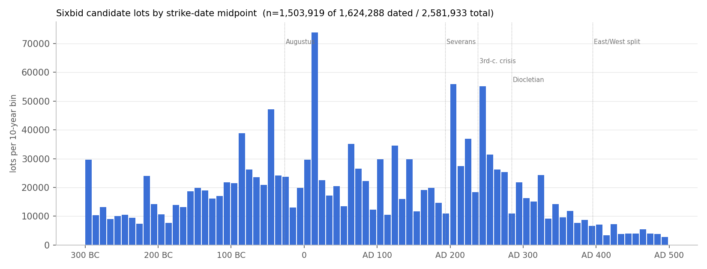

1.5 million auction lots from the Sixbid coin archive, binned by the midpoint of their catalogued strike date (10-year bins, 300 BC to AD 500).

The tall spikes are dating artefacts rather than minting peaks: a coin catalogued only to a reign lands on that reign's midpoint, so Augustus, Trajan, Hadrian, Septimius Severus and Gordian III each produce a single bar.